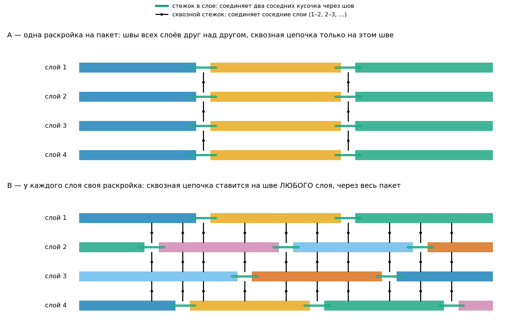
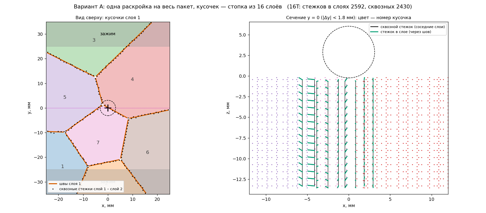
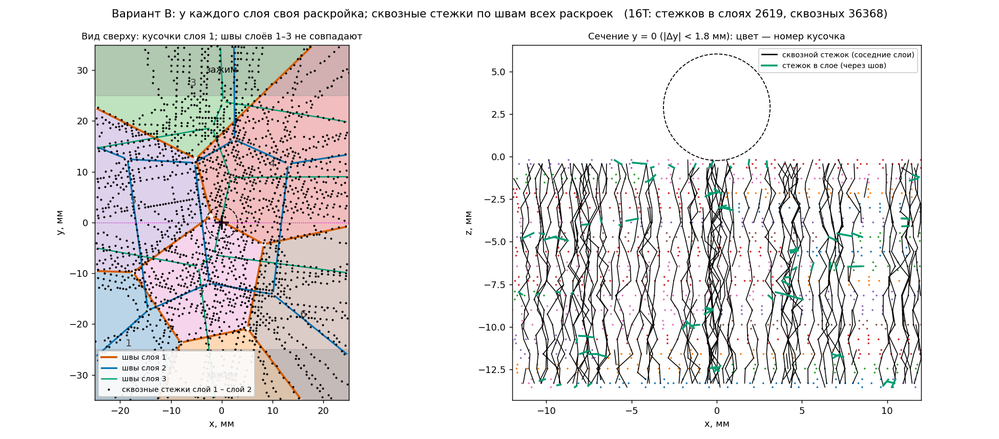
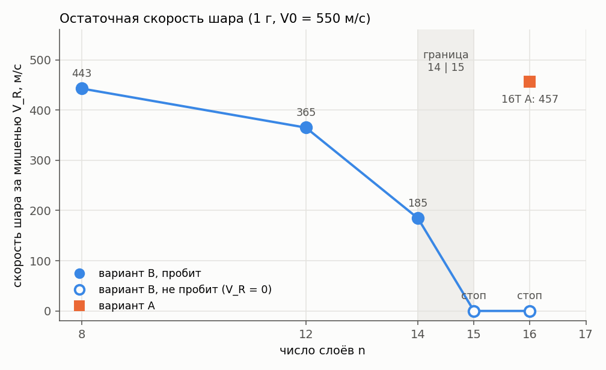
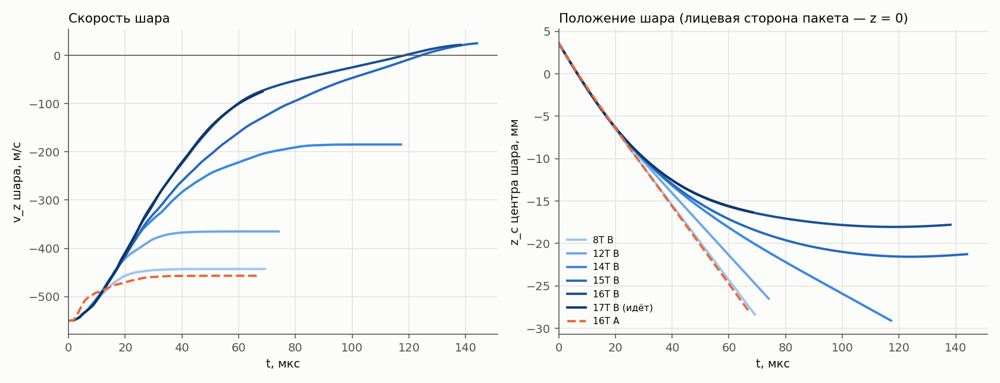
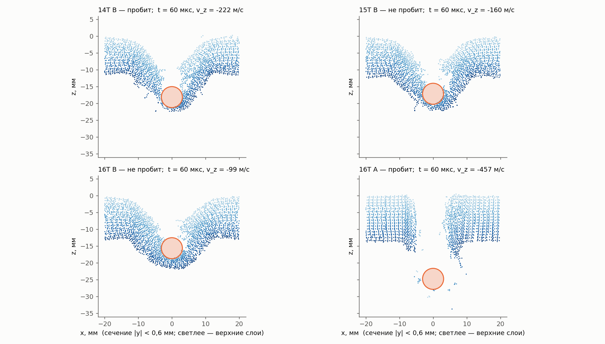
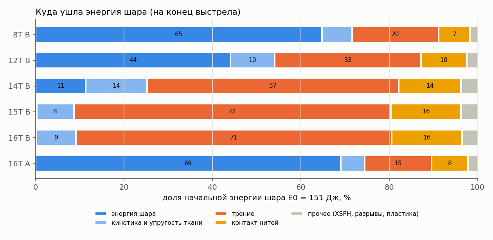
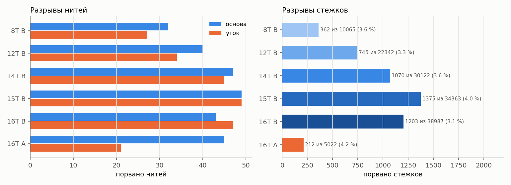
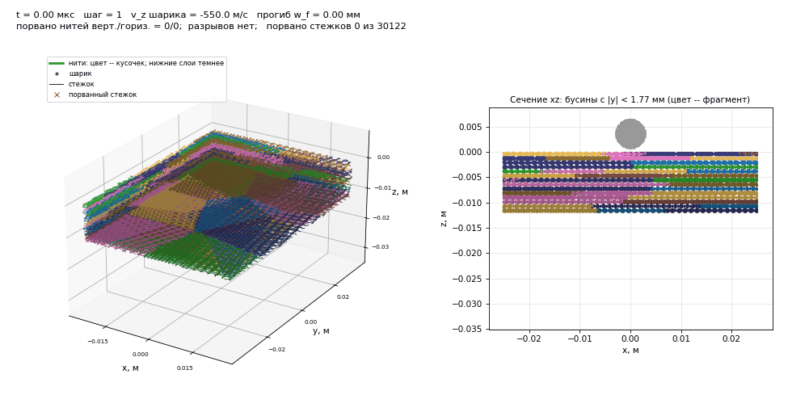
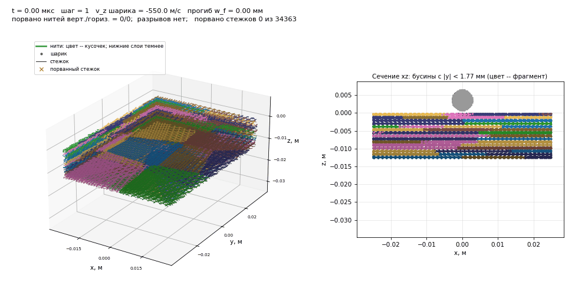

Мозаичная ткань kT: граница пробития по числу слоёв
Шар 1 г, D = 6,253 мм, V0 = 550 м/с. Мозаика из 7 кусочков на поле 50 × 70 мм. Все расчёты локальные, 6 потоков.
Итог14 слоёв пробиваются, 15 держат
Граница получена для варианта B, где у каждого слоя своя раскройка, делением пополам. В варианте A (одна раскройка
на весь пакет) даже 16 слоёв пробиваются, и шар вылетает со скоростью 457 м/с.
Что сделано за сессию
Guo 2T, мозаика, 147 м/с. Посчитаны выстрелы с общей раскройкой двух слоёв (k = 2, V_R = 116 м/с) и с отдельной
раскройкой каждого слоя (k = 1, V_R = 112 м/с). В обоих случаях шар проходит по шву, нити целы. Сделаны анимации обоих выстрелов.
Размер ткани стал задаваться ключами. В драйвер guo2019_shot добавлены ключи
--cut-size=WxH и --cut-clamp-edge. Поле 50 × 70 мм: свободная часть 50 × 50, по 10 мм на зажим с
каждой стороны. «По 10 см на закрепление» я понял как 10 мм.
Запущена автоматическая очередьqueue.py. Сначала 16T в вариантах A и B, затем выбор лучшего,
затем деление пополам только выбранным вариантом. После поиска по просьбе добавлен 17T.
Посчитано 7 выстрелов kT (17T ещё идёт). Сделаны картинки устройства вариантов, рисунки отчёта и анимации пороговых выстрелов 14T B и 15T B.
Два способа сшить пакет
Есть два вида стежков. Стежок в слое соединяет два соседних кусочка одного слоя через шов, с шагом 1,18 мм
вдоль шва. Сквозной стежок соединяет только соседние слои (1–2, 2–3, …). В одной точке они идут подряд и
образуют цепочку через всю толщину пакета.

Схема на 4 слоях, не расчёт. В A швы всех слоёв лежат друг над другом, и цепочки стоят только на них. В B у
каждого слоя свои швы, и цепочка ставится на шве любого слоя через весь пакет.
16T
Раскроек
Стежков в слоях
Сквозных
Сквозных на пару слоёв
Вариант A
1
2 592
2 430
162
Вариант B
16
2 619
36 368
≈ 2 440

Вариант A по реальной сцене 16T. Удар (крестик) приходится рядом со стыком кусочков 4, 5 и 7. Все 16 слоёв
разрезаны в одном месте.

Вариант B: швы слоёв 1–3 идут в разных местах, а точки сквозных стежков покрывают почти всё поле. В сечении
видна плотная сетка цепочек. Срез перегружен, потому что полоса шириной 3,6 мм спроецирована на одну плоскость.
Выстрелы
Выстрел
Исход
V_R, м/с
z_c min, мм
Нити о/у
Стежки порв. / всего
δ_ff/d
Счёт, ч
16T A
пробит
457
−28,1
45 / 21
212 / 5 022
0,67
1,7
8T B
пробит
443
−28,4
32 / 27
362 / 10 065
0,43
0,9
12T B
пробит
365
−26,5
40 / 34
745 / 22 342
0,80
1,5
14T B
пробит
185
−29,1
47 / 45
1 070 / 30 122
0,65
2,6
15T B
не пробит
0
−21,6
49 / 49
1 375 / 34 363
0,68
4,0
16T B
не пробит
0
−18,0
43 / 47
1 203 / 38 987
0,86
4,3
17T B
идёт
—
—
—
—
—
—
Порядок выстрелов: 16T A → 16T B → выбран B → 8 → 12 → 14 → 15, затем 17 сверх поиска. «Не пробит» значит, что
шар остановлен и отскочил назад, в 15T и 16T со скоростью 22–25 м/с. Баланс энергии сходится во всех выстрелах, невязка ≤ 0,1 Дж
при E0 = 151 Дж.

Скорость вылета шара по числу слоёв. От 8 до 12 слоёв она падает медленно, затем резко: 185 м/с при 14 слоях,
а 15 слоёв шар уже останавливают. 16T A для сравнения: он пробит почти так же легко, как 8T B.

Первые 15 мкс варианты B тормозят шар одинаково. В 16T A шар за первые 10 мкс теряет около 60 м/с,
а дальше почти не тормозится: пакет расходится по шву. В варианте B торможение растёт с числом слоёв. 15T и 16T
переходят через ноль (отскок), 17T на момент отчёта тормозит сильнее 16T.
Почему B держит лучше
В A кусочек — это стопка из 16 слоёв со стыками точно друг над другом. Шар попадает рядом со стыком трёх кусочков
и проходит по шву, раздвигая кусочки. Порвано 212 стежков из 5 022, нагрузка до зажима не доходит: наибольшая сила на
зажиме 0,12 кН.
В B швы разных слоёв не совпадают, и через каждый шов перекрываются целые слои. Сквозных стежков в 15 раз больше,
пакет простёган почти сплошь и прогибается как единое целое. Наибольшая сила на зажиме 7,3 кН.
Энергия в B уходит в основном в трение: 71–72 % E0 в 15T и 16T. В A трение забирает только 15 %.

Сечения y = 0 в один момент, t = 60 мкс. В B пакет прогибается конусом, и шар сидит в его вершине. В A
стопки кусочков расходятся по шву, и шар уже вышел под пакет, пройдя его с малыми потерями.

Куда ушла энергия шара к концу выстрела, в процентах E0. Синее — энергия, оставшаяся у шара.

Разрывы нитей и стежков. В варианте B доля порванных стежков почти постоянна, 3–4 %. Число порванных нитей
растёт до 15T, а в 16T немного падает: шар останавливается раньше.
Анимации пороговых выстрелов
Кадры записаны с шагом 10 мкс. Слева 3D-вид: нити окрашены по кусочкам, нижние слои темнее, порванные стежки показаны
красными крестиками. Справа сечение xz по полосе |y| < 1,8 мм.

14T B, пробит. Пакет прогибается конусом, нижние слои рвутся под шаром. Шар выходит со скоростью 185 м/с.

15T B, не пробит. Нижние слои удерживают шар, он останавливается на глубине 21,6 мм и отскакивает назад.
Ограничения
Нити заходят друг в друга глубже допустимого: δ_ff/d до 0,86, при пороге 0,5, на котором ветка законов контакта поставлена
на паузу. Сравнение A и B качественно надёжно, а границу 14 | 15 стоит считать оценкой.
Расчёт проведён на одной раскройке (seed = 1) и с одной точкой удара (0, 0). Попадание в стык кусочков случайно.
При другом seed граница может сдвинуться, особенно в варианте A.
В B каждая пара слоёв сшита по швам всех 16 раскроек, а не только своих двух. Если сшивать только по швам двух соседних
слоёв, стежков будет примерно в 8 раз меньше. Такой вариант не считался.
Изменения кода в guo2019_shot и сцене не закоммичены. Патч лежит в source.patch, бинарник
заморожен в bin/.
Каталог: experiments/2026-11-15-mosaic-kT-ball1g-v550/. Журнал очереди — queue.log,
рисунки — scripts/report_figs.py и scripts/variants_fig.py. Отчёт собран 15.11.2026 в 17:20, когда 17T ещё считался.